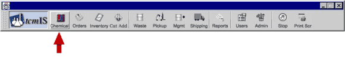
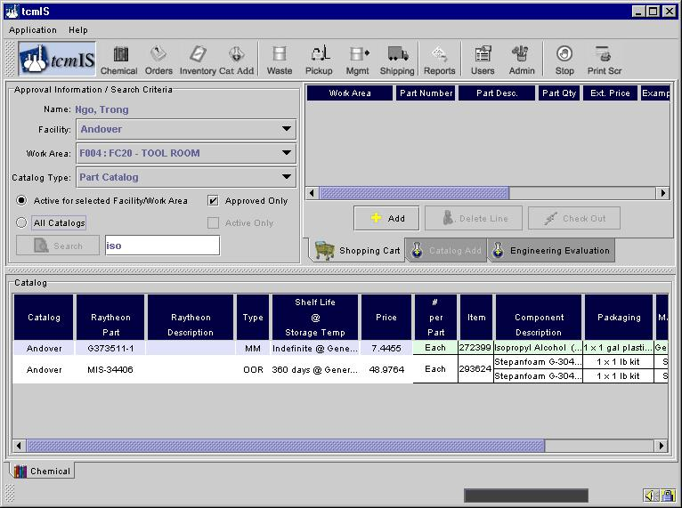
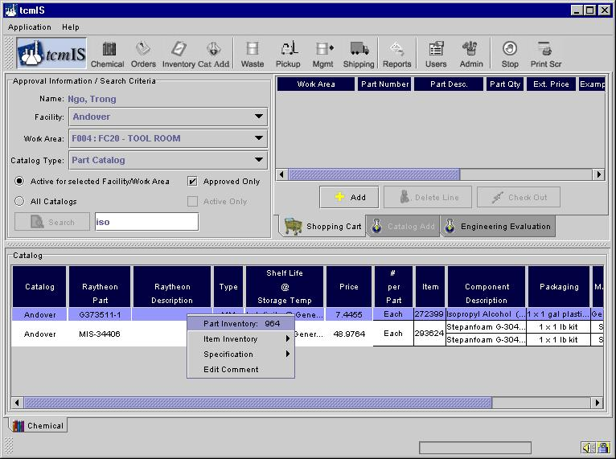
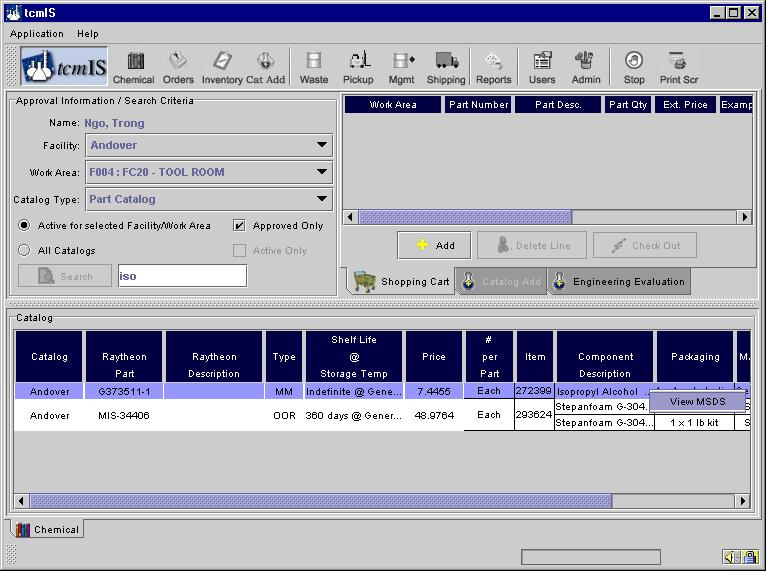
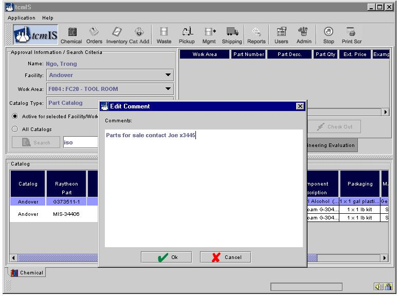

Chemical or Gas Catalog
If you are not on the catalog screen you can move to the catalog screen by clicking on the Chemical button as shown below.

The first step in ordering a chemical is to search for it in the Catalog. You may enter virtually anything you know about the material, such as your Part Number, Radian’s Part Number, Trade Name, Manufacturer, or Material Description. The more specific the information you enter the more your search is narrowed. You can enter partial or all of the specific information to perform your search. Multiple words as a logical expression can also be used (separate words by AND, OR, NOT; e.g., acetone AND cleanroom). Once you’ve entered the information - click on Search. You can add additional constraints to your search like approved only or active only depending on which facility and work area your are searching.

The catalog contains information on the chemicals approved for use in your facility and work area. After you perform a search operation the screen will look like below.

Before you can place an order you need to select your work area. You can only place orders for chemicals approved for your work area. The catalog is divided into three sections, the columns in blue and white represent the part details, the first two columns in green and white represent the item details pertaining to the part and the rest of the columns give component level details.
More information can be obtained for a specific chemical by left clicking anywhere on the line so the line is highlighted, then right clicking to display a menu of additional selections.
To obtain information regarding the part inventory, item inventory, specifications or to edit comments right click on the part section of the catalog table as shown below.

Similarly you can obtain more information regarding the item by right clicking on the item. You can view the MSDS of a particular component by right clicking on the component as shown below.

The MSDS will open in an Internet browser either Netscape or Internet Explorer according to your setup of tcmIS. (Note: you must have the adobe acrobat viewer installed for viewing PDF files).
You can also add comments to a particular part by right clicking on the part details.

When you add a comment to a particular part it is saved in the database. These comments will show up later when you or somebody else is trying to add this part to the shopping cart. You can use this tool to share information about excess chemicals that you have in your work area with people in other work areas. This can help you make efficient use of the chemicals you already ordered.